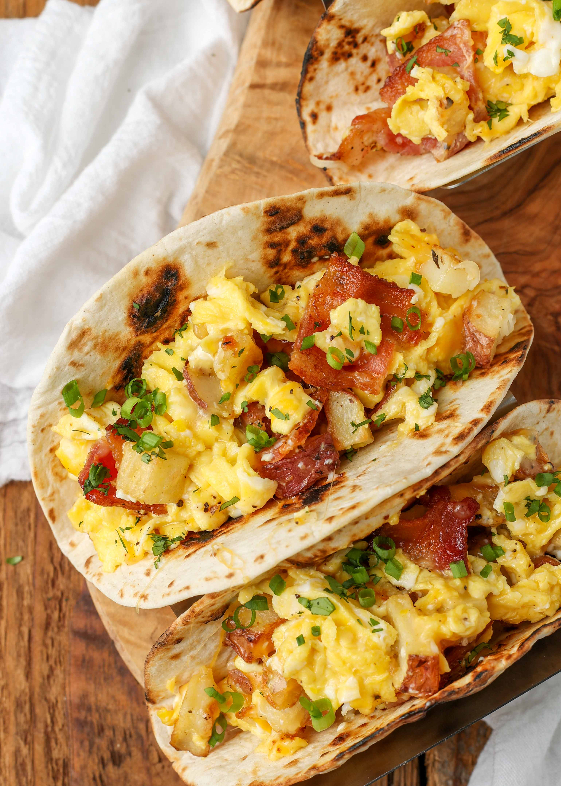

Mexican Breakfast Tacos
Description
A great recovery breakfast that has a zing of spice and the strong flavours of chorizo piled into a soft warmed taco.
Ingredients
- Pico de gallo
- 2 Tomatoes
- 1/2 red onion
- 2 tbsp lime juice
- 1 tbsp olive oil
- 2 tbsp coriander leaves
- 1/2 tsp salt
- Black pepper
- Chorizo
- 1 tbsp olive oil
- 200g mexican or raw Spanish chorizo removed from casings
- Mexican scrambled eggs
- 2 garlic cloves
- 2 birds eye chillies
- 1 small onion
- 4 large eggs
- 1 tbsp milk
- 3/4 tsp salt
- Black pepper
- To serve
- 4 small tortillas
- Cotija or feta
- Avocado
- Coriander leaves
Instructions
- Combine Pico de gallo ingredients EXCEPT THE SALT in a bowl and set aside while you prepare the rest of the breakfast.
- Cook Chorizo: Heat olive oil in a non stick fry pan over high heat. Add the chorizo and cook, breaking up the pieces, until browned. Remove chorizo into a bowl. Drain excess fat but leave enough to cook the eggs.
- Make the Eggs: Reduce heat to medium. Add garlic, chilies and onion to the pan and sauté for 2 to 3 minutes until translucent and starting to turn golden. Add the eggs and milk and stir slowly with a wooden spoon until the eggs start to set. Remove the pan from the stove while they are still a bit wet because they will keep cooking. Stir through salt and pepper - adjust to taste.
- Warm tortillas in the microwave or oven, per packet Instructions
- Add salt to pico de gallo and toss
- Assemble: Place some scrambled eggs in a tortilla then top with chorizo then pico de gallo. Garnish with cojita/feta, avocado and coriander leaves.
Odin Recipes